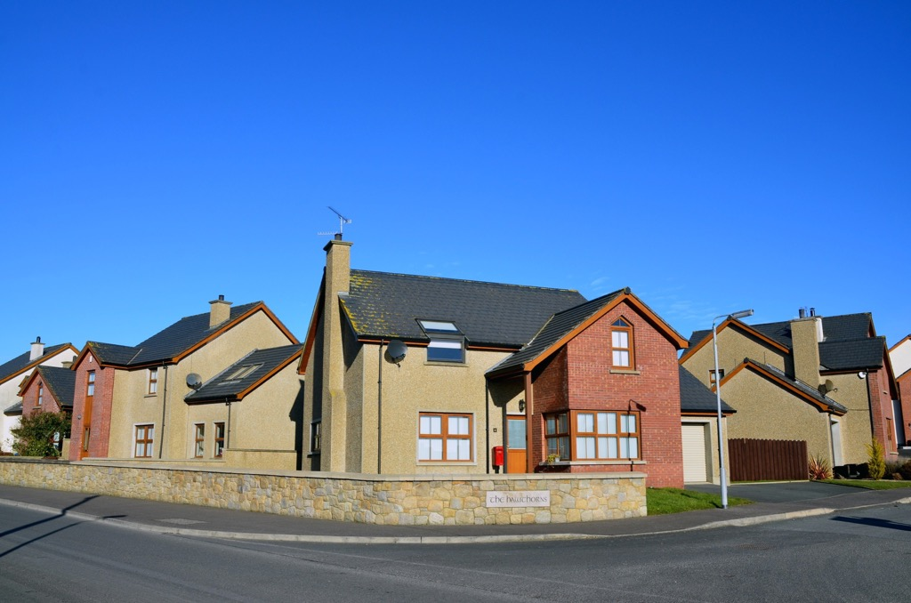
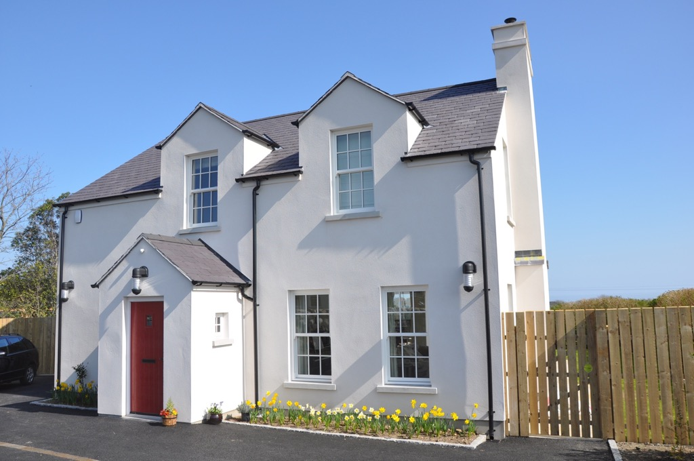
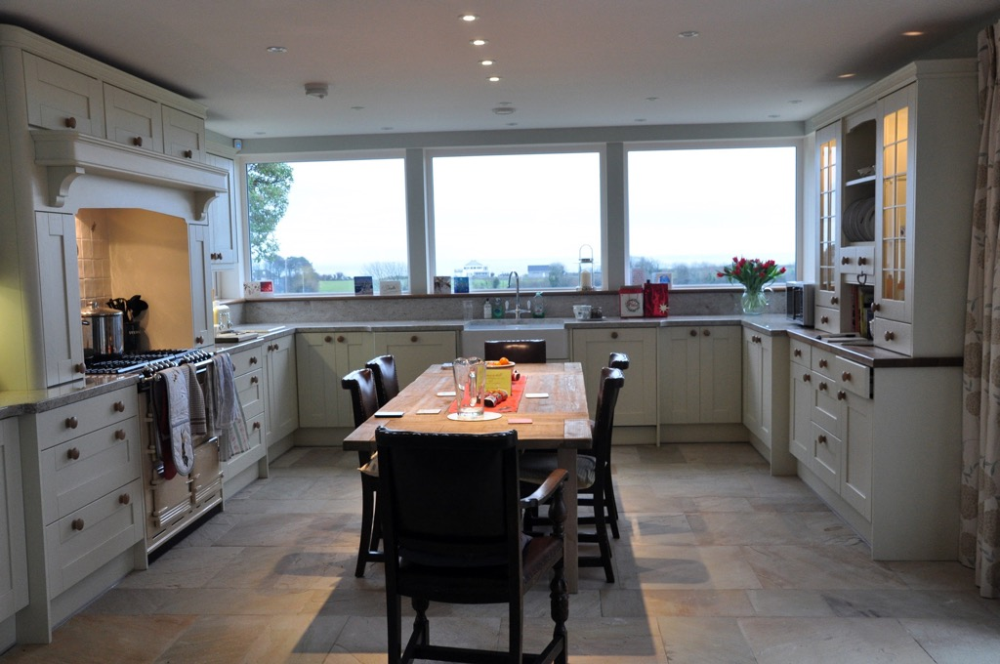
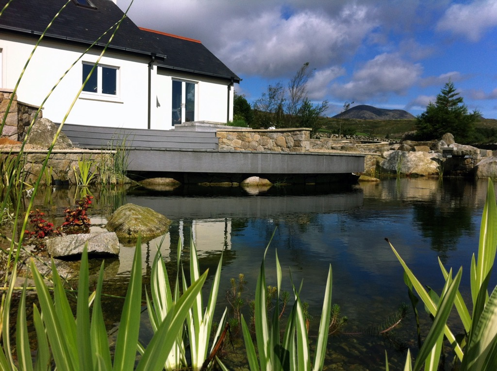
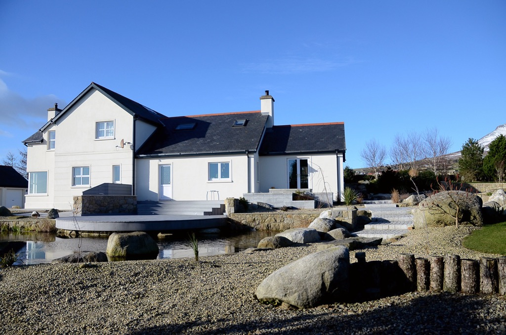

Tell us what you have in mind
Discuss your site, your proposed project and the way you want it to work.
OUR APPROACH
A clear process starts with your vision and an honest discussion about what is involved.
Discuss your site, your proposed project and the way you want it to work.
Establish a budget and the professional team. Design development and statutory consents form part of the published design-and-build process.
A quotation, specification, contract and payment terms provide the basis for the agreed project.
Move into construction, with communication throughout and an aftercare arrangement agreed for your project.
WORK SHOWN ON THE EXISTING WEBSITE





GOOD TO KNOW
Contact McBride with your location, project type and any drawings you already have. The first discussion can establish your priorities and the information needed for a quotation.
Yes. The existing website describes a design-and-build process involving consultation, an architect, design development, permissions, contract terms and construction.
Please ask McBride directly. This demo does not list or imply availability of any development or property.
McBride describes a completely finished home, with items such as painting, tiling, carpets and blinds. The exact specification needs to be agreed for the property.
LET’S START A CONVERSATION